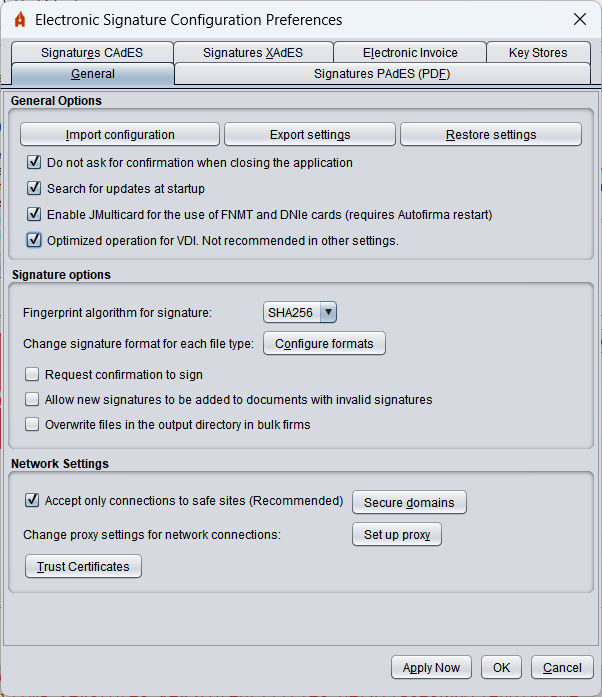
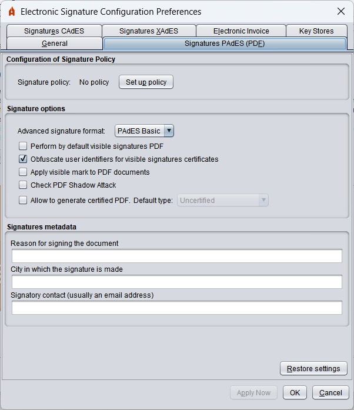
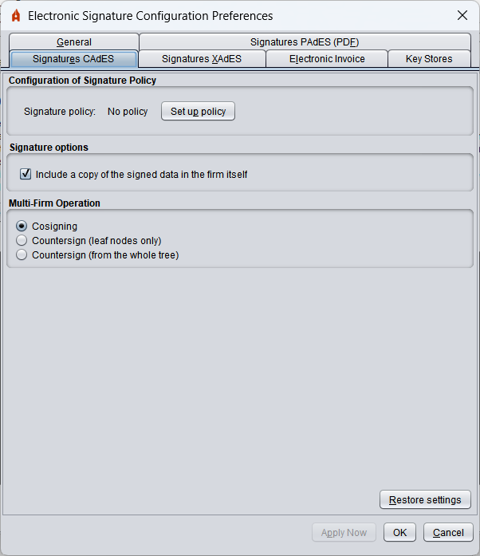
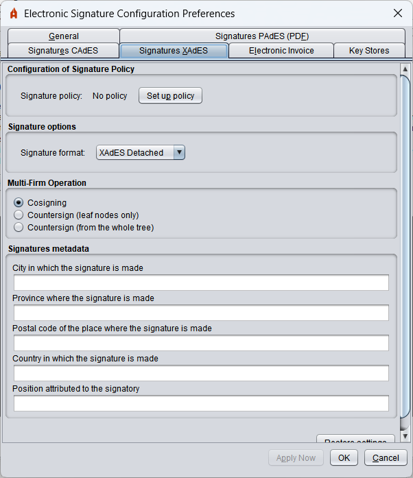
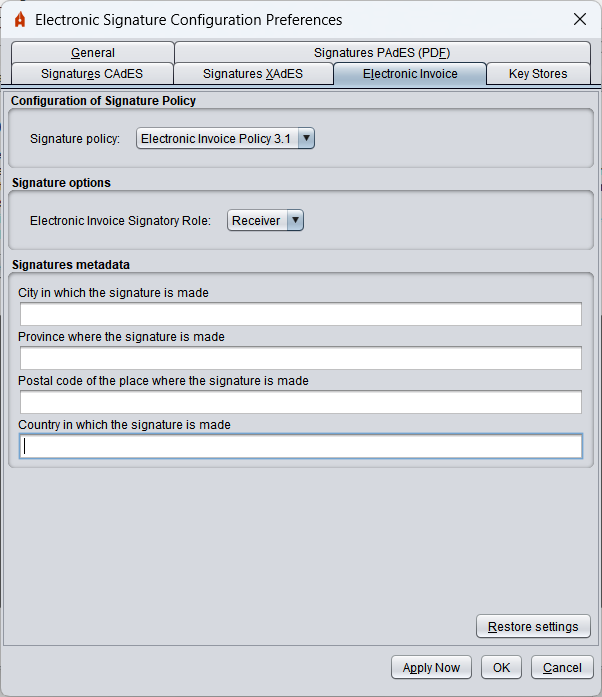
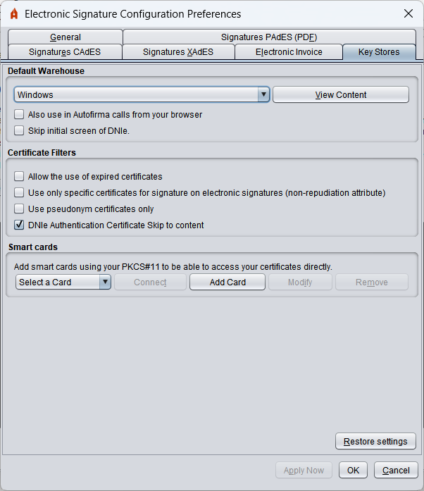

Menu Preferences
To set up the signatures generated by the tool, go to the setup menu via the "Tools" -> "Preferences" option in the application menu bar. From this menu you can set the general application behavior and the signatures generated for each type of format.
If you press the "Cancel" button from any of the tabs in the menu, this will be closed by ignoring any changes made; if you press the "Accept" button, the menu will be closed by setting the options defined in the menu and if you press the "Apply now" button, the changes made will be applied without closing the menu.
Menu "General"

- General options:
- Import general application settings: Option to import a file from the configuration provided by an administrator.
- Restore general application settings: Option to restore default settings to the application.
- Do not ask for confirmation when closing the application: Allows you to leave the application without user confirmation.
- Search for updates at home: It allows you to set up if you need to search for updates available when you start the application.
- Enable JMulticard for use of FNMT and DNIe cards: Just in Windows and Linux. Configure whether the Autofirma integrated driver should be used for the use of FNMT and DNIe cards. In case of deactivation, the drivers found in the system will be used. The use of this feature allows the use of compatible cards when the user does not have their driver installed or there is any incompatibility with it. This feature may result in the user being asked multiple times to insert the card PIN into mass signing processes. This setting will not take effect until the next time the application is opened.
- Optimized operation for VDI: Just in Windows. Configure WebScokets communication with your browser in such a way that blocks will be avoided when using Autofirma in a VDI environment. However, this setting slows down communication when the amount of data to be transmitted is large, so it is not recommended in other settings.
- Signature options:
- Signature algorithm: Default signing algorithm that uses the application to generate electronic signatures.
- Signature formats: Set the signature format to be applied when a certain type of document is provided. Clicking on the "Configuring Formats" button shows a dialogue with the document types for which a specific signature format can be configured:
- PDF documents
- Microsoft Office OOXML Documents
- Electronic invoices
- Generic XML files
- LibreOffice or OpenOffice ODF files
- Other files
Any of these types of files can be signed with the CAdES and XAdES formats (according to the configuration set in the corresponding tabs) and some of them can be signed in specific formats.The
type of document "Other files" refers to any document that is not in any of the above categories.
WARNING: It is not recommended that electronic invoices should be signed in a format other than electronic invoice.
- Request confirmation to sign: When this option is enabled, confirmation is requested from the user before signing.
- Allow new signatures to be added to documents with invalid signatures: By enabling this option, Autofirma will not prevent adding new signatures (co-signatures or counter-signatures) to documents where it is found that there are already signatures and that they are invalid (corrupt or with expired certificates).
- Overwrite files in the output directory: Option to set up if it is desired that, when generating the structure of signatures directories resulting from a massive signing process, and in case of finding a file with the same name with which a signature will be stored, the pre-existing file will be overwritten by the new signature file or the signature will be saved using a new name.
- Network configuration:
- Accept only connections to safe sites (Recommended): If this option is enabled, the confidence in the SSL certificate of the websites to which the application must connect will be checked. If you work on websites with an unrecognized SSL certificate, you may need to disable this option.
- Secure domains: Option to set up a list of domains that Autofirma will treat as safe when connecting via SSL. For more information, see the White List Settings page.
- Configuring proxy: Option to set up the proxy for all Autofirma network connections. For more information, see the Network Proxy Settings page.
- Trust certificates: Option to set up trust certificates on network connections. For more information, see the Trusted Certificates page.
Menu "Signatures PAdES (PDF)"

Menu "CAdES signatures (binary)"

Menu "Signatures XAdES (XML)"

- Configuration of the signature policy: It makes it possible to declare the signature policy followed by the XAdES signatures:
The values accessible through the configuration panel are:
- No policy: The XML signatures generated shall not declare a signature policy.
- AGE 1.9 Signature Policy: Signature policy of the AGE v1.9
- Tailored policy: It allows each of the properties of the policy to be set up manually.
- Policy identifier.
- Fingerprint of policy identifier.
- Policy ID fingerprint algorithm.
- Policy qualifier
- Signature options:
- Format of signatures:
- XAdES Enveloping: The enveloping mode is configured (the signature involves the signed data).
- XAdES Detached: The detached mode (signature and data in an XML superstructure) is configured.
- XAdES Enveloped: The enveloped mode is configured (the signature is inserted into the XML data).
WARNING: The AGE signature policy only allows signatures to be made in Enveloped and Internally Detached formats (here referred to as Detached). These signature formats can therefore only be set up when the AGE signature policy is declared.
- Metadata of XAdES signatures:
- City in which the signature is made: City where the signatory is located at the time of signature.
- Province in which the signature is made: Province where the signatory is located at the time of signature.
- Postal code in which the signature is made: Postal code where the signatory is located at the time of signature.
- Country in which the signature is made: Country where the signatory is located at the time of signature.
- Position of the signatory: Position of the person making the signature.
Menu "Electronic Invoice"

- Configuration of the signature policy: It makes it possible to declare the version of the Electronic Invoice signature policy to be used.
- Signature options:
- Role of the electronic invoice signatory: It allows you to set up the role of the signatory in the life cycle of the invoice.
- Electronic invoice metadata:
- City in which the signature is made: City where the signatory is located at the time of signature.
- Province in which the signature is made: Province where the signatory is located at the time of signature.
- Postal code in which the signature is made: Postal code where the signatory is located at the time of signature.
- Country in which the signature is made: Country where the signatory is located at the time of signature.
Menu "Key Stores"

- Default store:
- It allows you to select the key store that will be charged by default in the desktop interface.
- View Content: It allows you to view the certificates contained in the selected warehouse.
- Also use in Autofirma calls from your browser: Indicates whether you want the configured store to be the one that is charged by default also when you call Autofirma from your browser.
- Certificate filters:
- Do not display the initial screen of DNIe and always work with the default store: Skip the initial screen when a DNIe is detected and the configured default store will be used.
- Allow the use of expired certificates: As this option is enabled, expired certificates will appear in the signature certificate selection dialogue, enabling them to sign with them.
- Use only signature specific certificates in electronic signatures (non-repudiation attribute): If this option is marked, only certificates specifically declaring signature shall be shown.
- Use pseudonym certificates only when available: It restricts that pseudonym certificates can only be used when they are available.
- Skip DNIe authentication certificate: Hides the authentication certificate included in the key stores for DNIe.
- Smart cards:
- It allows you to release smart cards from your PKCS#11 driver so you can use them directly as a key store accessible from the certificate select dialog. The smart cards added here can be set up as default stores in the drop-down in the first paragraph.
- Connect: Perform a connection test with the key store of the selected smart card.
- Add Card: Add a new smart card. It will open a dialogue where you can enter a name for the smart card and the route where your PKCS#11 driver is located.
- Amend: It allows you to modify the name and route of the selected smart card driver.
- Remove: Removes the selected smart card from the drop-down.